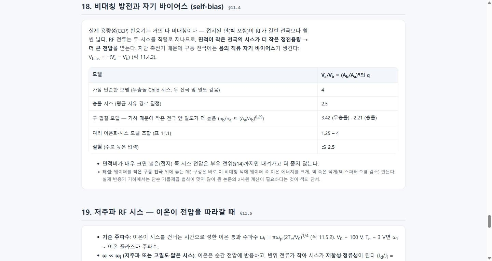
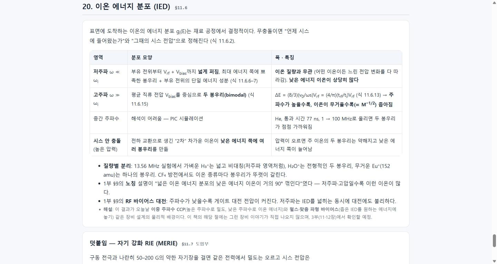
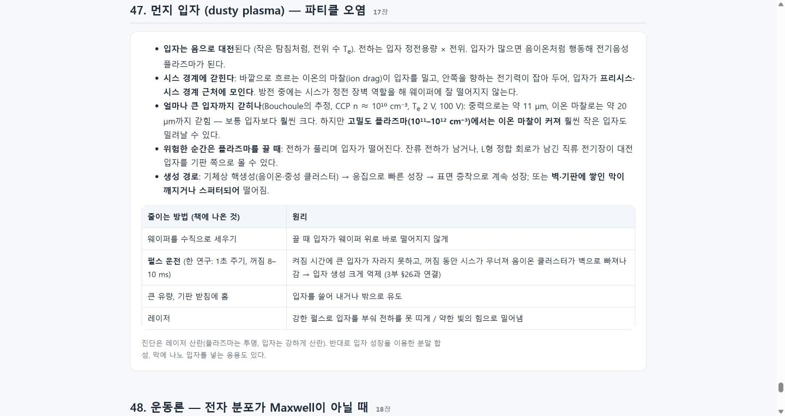
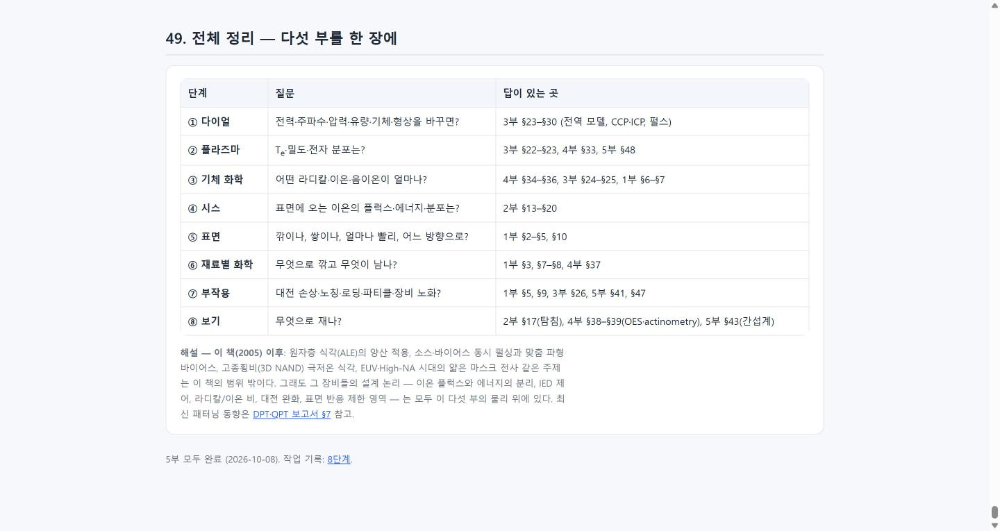
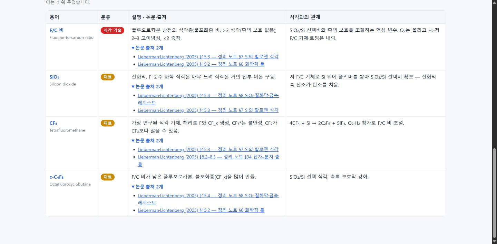
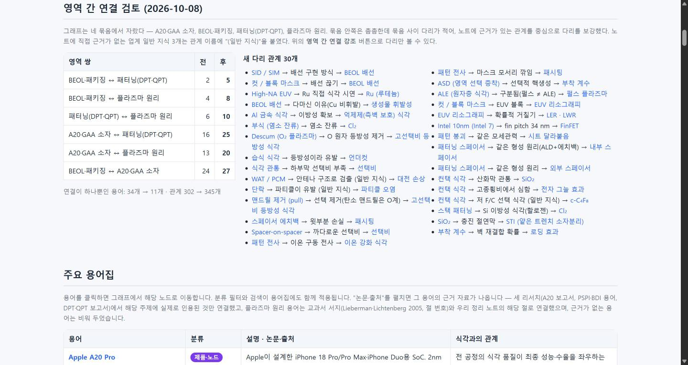

항목 #31–#38 · 2026-10-08 20:25 ~ 22:55 · 플라즈마 공정 교과서(Lieberman & Lichtenberg)를 파트로 나눠 읽고 식각 지식을 정리한다.
#31
Lieberman 교과서에서 플라즈마 식각 지식 추출 — 1부
지시 (원문)
Lieberman - Principles of Plasma Discharges and Materials Processing - 2nd edition
위 문서 참고하여 일반적인 플라즈마 식각 공정에 대한 지식 추출.
문서가 너무 길어서 전체 해석하는 데 오래 걸릴 경우 파트를 나눠서 진행.
지시의 나머지 부분은 사용자 요청에 따라 기록하지 않음.
분석 (Claude의 정리)
플라즈마 공정의 표준 교과서(794쪽, 18장)에서 식각에 필요한 지식을 추출한다. 한 번에 다 읽기엔 길어 파트로 나눈다.
저작권 자료이므로 원문 문장·그림은 옮기지 않고, 자기 말로 요약하되 수식·수치에는 책의 절·식 번호를 붙여 확인할 수 있게 한다.
지금까지의 리서치(최신 동향)와 성격이 다른 "기초 문헌 학습"이라 기록 단계를 새로 만들지 jev에게 묻는다.
과정
문서 확인: 794쪽, 텍스트 약 148만 자. 책갈피가 없어 본문에서 목차를 찾아 장 구조(18장)와 쪽 번호 대응(책 쪽 + 37 = 파일 쪽)을 파악.
jev 자문 4건: 기록 단계 → 새 8단계 (선택 a, 확률 0.64, 신뢰도 0.46 — 7단계 이어가기 0.34와 차이가 크지 않음) · 파트 나누기 → 식각 관련도 순 5부 (a, 0.90) · 결과물 → 한 페이지를 파트마다 키워 가기 (a, 0.97) · 이번엔 1부만 완성하고 다음 지시를 기다릴지 → 0.68 (그렇게 함). 모두 반영.
5부 구성 확정: 1부 식각 직접(15장 + 9.3–9.4) → 2부 시스·이온 에너지(6장, 11.4–11.6) → 3부 방전 장비(10·11·12장) → 4부 기체 화학·진단(3·7·8장, 9.1–9.2) → 5부 나머지 기초 요약.
1부 정독: 15장 전체(식각 요구 조건, 네 가지 메커니즘, 표면 반응 모델, 로딩, 화학적 틀, Si의 F·Cl·Br 식각과 CF₄ 화학, SiO₂·질화막·Al·Cu·레지스트, 기판 대전·손상)와 9.3–9.4(이온 중화·이차 전자, 흡착·탈착, 스퍼터링 수율, 표면 반응 속도론).
research/plasma_etch_principles.html 작성: 진행 상황 표(5부), 1부 11개 절, 표 10개, 주요 식에 절·식 번호, 끝에 "식각 엔지니어 체크포인트"와 이 스터디의 다른 주제(SADP·SAQP, 채널 릴리스, 노칭·로딩)와의 연결.
로컬 미리보기 확인(가로 넘침 없음), 증거 스크린샷 4장, 목차에 추가, 기록 8단계 페이지 생성.
민감정보 검사 통과, 커밋 메일 no-reply 확인 → 커밋·푸시. Pages 배포 약 1분 만에 완료, 노트·기록·목차·스크린샷 200 확인 (<계정>.github.io/etch-paper-study/).
history_img/20261008_205300_lieb_progress.png — 페이지 첫 화면: 5부 진행 상황 표history_img/20261008_205300_lieb_surface_model.png — §15.2 표면 반응 모델: 이온·중성 공급이 직렬 저항처럼 작용, 세 영역 표history_img/20261008_205300_lieb_fc_map.png — §15.3 CF₄ 방전 화학과 F/C 비·바이어스 지도history_img/20261008_205300_lieb_charging.png — §15.5 기판 대전과 게이트 산화막 손상
#32
Lieberman 지식 정리 — 2부: 시스와 이온 에너지
지시 (원문)
2부 진행
분석 (Claude의 정리)
#31에서 정한 5부 계획의 2부: 6장(DC 시스) 전체와 11.4–11.6(비대칭 방전·자기 바이어스, 저주파 RF 시스, 전극에 도달하는 이온 에너지).
1부의 "이온은 수직으로 와서 이방성을 준다"를 물리적으로 뒷받침하는 부분 — 이온 플럭스, 에너지, 에너지 분포가 무엇으로 정해지는지에 초점을 둔다.
같은 페이지에 2부 절을 이어 붙이고 진행 상황 표를 갱신한다 (jev가 #31에서 고른 방식).
과정
2부 범위 추출: 6장 42쪽, 11.4–11.7 앞부분 22쪽.
정독: Bohm 기준과 프리시스(Te/2, 0.61), 부유 벽 전위(Ar ≈ 5.2Te), 매트릭스·Child·충돌 시스, 전기음성·다종 이온의 일반화된 기준, 랭뮤어 탐침(요약만, 진단은 4부), 자기 바이어스의 면적비 지수(4 → 실험 ≲ 2.5), 저주파 정류성 시스(π/2 지수), 이온 에너지 분포(저주파 넓음·질량 무관 / 고주파 두 봉우리·ΔE ∝ M−1/2/ω / 고압 2차 봉우리), MERIE 도입부.
2부 10개 절(§12–§21) 작성. 책 내용과 구분되도록 Claude의 해석은 "해설"로 따로 표시 (예: 부유 벽 이온이 스퍼터 문턱 근처라는 점, 시스 두께가 패턴보다 훨씬 커서 수직 입사가 된다는 점, 이중 주파수·맞춤 파형 바이어스와의 연결 — 마지막은 이 책의 해당 절에 직접 나오지 않음을 명시). 1부의 식각 모델·노칭·RF 대전과 서로 참조되게 연결.
로컬 미리보기 확인(가로 넘침 없음), 진행 상황 표 2부 "완료", 목차 태그 "2/5부"로 갱신, 증거 스크린샷 3장.
민감정보 검사 통과, 커밋 메일 no-reply 확인 → 커밋·푸시. Pages 배포 약 1분 만에 완료, 노트·기록·목차·스크린샷 200 확인 (<계정>.github.io/etch-paper-study/).
history_img/20261008_220500_lieb2_sheath.png — 2부 첫 화면: 시스란 무엇인가, Bohm 기준

history_img/20261008_220500_lieb2_selfbias.png — §18 비대칭 방전과 자기 바이어스: 면적비 지수 비교표

history_img/20261008_220500_lieb2_ied.png — §20 이온 에너지 분포: 주파수·질량·압력에 따른 모양
#33
Lieberman 지식 정리 — 3부: 방전 장비
지시 (원문)
3부 진행
분석 (Claude의 정리)
5부 계획의 3부: 10장(입자·에너지 균형, 전기음성·펄스 방전), 11장(CCP, 앞 부분 중 2부에서 안 다룬 11.1–11.3과 11.8), 12장(ICP), 13장(파동 가열 소스) 개요.
분량이 가장 많은 파트(약 200쪽)라, 유도 과정보다 결론·스케일링·수치 예시 위주로 읽고 정리한다.
2부 §20에서 "이 책에 직접 나오지 않으며 3부에서 확인할 예정"이라 적어 둔 이중 주파수 CCP를 실제로 확인해 고친다.
과정
3부 범위 추출: 10장 60쪽, 11장 앞 43쪽 + 11.8, 12장 30쪽, 13장 44쪽.
10장 정독: 가열 방식 4가지, 전역 모델(입자 균형 → Te, 에너지 균형 → 밀도)과 책의 세 계산 예(저전압 시스·자기장·500 V 시스), 라디칼 스케일링, 전기음성 방전의 층 구조와 O₂·Cl₂ 실험, 펄스 방전(Te가 밀도보다 빨리 식음, 음이온 방출, 라디칼은 최대 전력으로 유지).
11장은 제목·스케일링 문장을 먼저 찾아 핵심 부분만 정독: 확률적·저항 가열 증거, 저압 스케일링(n ∝ ω²V), Godyak 실험의 두 온도 분포, 이중 주파수 조건과 정재파·표피 효과(§11.2 — 2부의 예상이 맞음을 확인), 정합 회로·전력 측정.
12장 정독(표피 깊이, 변압기 모델과 계산 예, 코일 턴 수, E–H 모드 전환·히스테리시스·전기음성 이완 진동, 평면 코일 측정), 13장은 각 절 도입부만 읽어 ECR·헬리콘·표면파 개요.
3부 11개 절(§22–§32) 작성. 정합 회로 절의 "흡수 전력 측정법"은 쓰기 전에 원문(§11.8)을 다시 확인해 구체적 방법(방전을 끄고 같은 전압에서 비교)으로 고침. 펄스 방전의 시간 단위는 텍스트 추출에서 μ가 깨져 있어 계산값(감쇠율)으로 μs임을 확인. 책 내용이 아닌 해석은 "해설"로 표시.
2부 §20 해설 수정(이중 주파수는 책 §11.2에 있음, 맞춤 파형 바이어스는 책에 없음), 진행 상황 표 3부 "완료", 목차 태그 "3/5부", 로컬 미리보기(가로 넘침 없음), 증거 스크린샷 3장.
민감정보 검사 통과, 커밋 메일 no-reply 확인 → 커밋·푸시. Pages 배포 약 1분 만에 완료, 노트·기록·목차·스크린샷 200 확인 (<계정>.github.io/etch-paper-study/).
5부 계획의 4부: 3장(원자 충돌), 7장(화학 평형·증기압), 8장(분자 충돌·광방출·actinometry), 9.1–9.2(기체상 반응 속도론).
3부의 전역 모델이 "주어진 값"으로 쓴 속도 상수·이온쌍당 에너지 비용의 출처와, 라디칼을 재는 방법(OES·actinometry)에 초점. 1부의 식각 화학(휘발성, CF₄ 반응, 끝점)과 연결한다.
과정
4부 범위 추출: 3장 44쪽, 7장 28쪽, 8장 50쪽, 9.1–9.2 15쪽. 각 장의 제목을 먼저 뽑아 식각과 관련된 절을 골라 읽음.
정독: 8.6 광방출·actinometry 전체(F 7037/Ar 7504 Å 쌍, O 7774 Å가 해리 들뜸 때문에 실패한 LIF 비교 사례), 8.1–8.3 분자 구조·전자–분자 충돌(Franck–Condon, 해리·해리 이온화·해리 재결합·해리 부착·극성 해리·진동 들뜸), 3.5 속도 상수 평균과 이온쌍당 에너지 비용 Ec, 7.5 증기압·표면 평형, 9.1–9.2 기본 반응·속도 결정 단계·3체 반응. 8.4(중입자 충돌)와 3장 나머지는 제목·핵심 결과만.
4부 8개 절(§33–§40) 작성. 증기압 표의 온도는 텍스트 추출에서 음수 기호가 "2"로 깨져 있어(예: SiCl₄ "263.4" = −63.4 °C) 물질의 알려진 성질과 맞춰 부호를 복원. 1부의 휘발성 표·Al/Cu 식각, 3부의 전기음성 방전과 서로 참조되게 연결.
작성 후 교차 참조 점검에서 "1부 §8 그림 15.10의 F/Ar 방출비"라고 쓴 부분이 1부에 실제로 없는 내용이어서, 책 15장 그림 15.10을 가리키도록 고침.
진행 상황 표 4부 "완료", 목차 태그 "4/5부", 로컬 미리보기(가로 넘침 없음), 증거 스크린샷 3장.
민감정보 검사 통과, 커밋 메일 no-reply 확인 → 커밋·푸시. Pages 배포 약 1분 만에 완료, 노트·기록·목차·스크린샷 200 확인 (<계정>.github.io/etch-paper-study/).
history_img/20261008_222100_lieb4_actinometry.png — §39 actinometry: 원리, F/Ar 쌍, O 원자 실패 사례
#35
Lieberman 지식 정리 — 5부: 나머지 기초 + 전체 정리 (완료)
지시 (원문)
5부 진행
분석 (Claude의 정리)
5부 계획의 마지막: 식각과 직접 관련이 덜한 1–2장(개요·플라즈마 기초), 4–5장(동역학·수송), 14장(DC 방전), 16장(증착·이온 주입), 17장(먼지 입자), 18장(운동론)을 요약 수준으로.
그중 식각 실무와 닿는 1장(플라즈마 처리 전체 그림, 장비 비교표)과 17장(파티클 오염)은 자세히 읽는다.
마지막으로 다섯 부를 "다이얼 → 플라즈마 → 기체 화학 → 시스 → 표면 → 부작용 → 진단" 순서의 지도로 묶는다.
과정
5부 범위 추출(1·2·4·5·14·16·17·18장, 약 300쪽)과 각 장 절 제목 목록.
1장 전체 정독 (IC 공정 중 플라즈마 비중, 이온 강화 식각 실험, CF₄ CCP의 종별 밀도·에너지, RF 다이오드 vs 고밀도 소스 표, RIE라는 이름의 오해, 고밀도 소스의 숙제, 방전 해석의 중심 문제). 17장은 도입부와 17.6(입자 제거) 정독 — 시스 경계 포획, 갇히는 입자 크기 추정(CCP: 중력 ~11 μm, 이온 마찰 ~20 μm), 고밀도에서 작은 입자도 밀려남, 끌 때의 위험, 펄스·유량·홈·레이저 대책.
2·4·5·14·16·18장은 절 도입부와 핵심 식만 확인 (Debye 길이·Boltzmann 관계, 차단 주파수와 간섭계, 양극성 확산 Da = Di(1 + Te/Ti), 마그네트론·I-PVD, PECVD·반응성 스퍼터·PIII, 국소/비국소 운동론). I-PVD는 처음에 제목만 보고 설명을 쓰려다, 쓰기 전에 원문(14.6)을 확인해 압력 범위·이온화 에너지 등 책의 내용으로 고침.
5부 9개 절(§41–§49) 작성 — §49는 다섯 부 전체를 "질문 → 답이 있는 절" 표로 묶은 지도와, 책(2005) 이후 주제(ALE 양산, 맞춤 파형 바이어스, 극저온 고종횡비 식각, EUV 시대 마스크 전사)는 범위 밖이라는 "해설". 진행 상황 표 "전체 완료", 목차 태그 "5/5부 완료".
로컬 미리보기(가로 넘침 없음, 본문 49절), 증거 스크린샷 3장.
민감정보 검사 통과, 커밋 메일 no-reply 확인 → 커밋·푸시. Pages 배포 약 1분 만에 완료, 노트·기록·목차·스크린샷 200 확인 (<계정>.github.io/etch-paper-study/).
결과 / 증거
성공 교과서 지식 정리 5부 모두 완료 — 본문 49개 절 (1부 11 · 2부 10 · 3부 11 · 4부 8 · 5부 9).
history_img/20261008_222900_lieb5_progress_done.png — 진행 상황 표: 5부 모두 완료

history_img/20261008_222900_lieb5_dust.png — §47 먼지 입자: 대전·포획·끌 때의 위험·대책

history_img/20261008_222900_lieb5_overall_map.png — §49 전체 정리: 다섯 부를 한 장의 지도로
#36
플라즈마 식각 원리 용어를 용어집·지식 그래프에 추가
지시 (원문)
용어집과 지식 그래프에 추가해줘
분석 (Claude의 정리)
#31–#35에서 완성한 플라즈마 식각 원리 노트(49개 절)의 핵심 용어를 기존 용어집·지식 그래프(126개)에 넣고 기존 노드(이방성 식각, 선택비, 로딩, 노칭, 펄스 플라즈마, 하드마스크 등)와 관계로 잇는다.
기존 용어의 "논문·출처"는 모두 공개 URL인데, 교과서는 원문 링크가 없으므로 출처 표기 방법을 정해야 한다.
과정
기존 노드 id·분류 확인 (126개, 9개 분류). 후보 용어 약 50개 선정.
jev 자문 3건: 분류 → 기존 분류에 성격대로 흩어 넣기 (선택 c, 확률 0.75, 신뢰도 0.61) · 범위 → 후보 약 50개 모두 (a, 0.98) · 출처 → 교과서 서지(저자·연도·절 번호) + 우리 노트의 해당 절 링크 (a, 1.00). 그런데 시스·Bohm·IED 같은 순수 플라즈마 물리 개념은 기존 9개 분류 어디에도 맞지 않아 추가 질문: 이 개념들만 새 분류로 묶을지 → 새 분류 "플라즈마 물리" (a, 1.00). 모두 반영 (해리·해리 부착 2개도 같은 이유로 이 분류에 포함).
추가 스크립트 작성·적용: 새 용어 54개(플라즈마 물리 17, 기타 공정·장비 11, 식각 기술 9, 결함·과제 7, 재료 5, 테스트 4, 구조 1 — SiO₂ 노드가 없어 새로 추가), 관계 82개, 교과서 출처 44개(각각 노트 절로 링크), 기존 용어 11개에도 교과서 출처 보강. 스크립트는 없는 노드·출처를 가리키면 멈추도록 검사 포함, 페이지 스크립트 문법 검사 통과.
브라우저 확인 중 버그 발견: 출처 라벨이 "정리 노트 §0"처럼 절 번호 앞자리가 잘림(앵커 문자열을 한 글자 더 잘라냄) → 44개 라벨을 링크 앵커에서 다시 만들어 고침. 첫 스크린샷은 레이아웃 계산 중 응답 없음으로 실패해 새 탭에서 다시 촬영.
확인: 용어 180개·관계 302개 렌더링, 그래프 라이브러리 오류 없음, IED 노드 패널에 "§11.6 — 정리 노트 §20" 링크, "Lieberman" 검색 65개(새 54 + 출처 보강 11), "F/C" 검색 4개와 펼친 출처 목록. 목차 수치 갱신.
민감정보 검사 통과, 커밋 메일 no-reply 확인 → 커밋·푸시. Pages 배포 약 1분 만에 완료, 그래프·기록·목차·스크린샷 200 확인 (<계정>.github.io/etch-paper-study/).
결과 / 증거
성공 용어 126 → 180개, 관계 220 → 302개, 새 분류 "플라즈마 물리". 출처가 붙은 용어 175개.
history_img/20261008_223900_graph_ied_plasma.png — 새 분류 "플라즈마 물리"(청록), IED 포커스: 자기 바이어스·이중 주파수에서 들어오고 수율·노칭·대전으로 나감, 출처는 교과서 절 + 노트 절 링크

history_img/20261008_223900_gloss_fc_sources.png — 용어집 "F/C" 검색: F/C 비·SiO₂·CF₄·c-C₄F₈와 펼친 논문·출처
#37
지식 그래프 영역 간 연결 검토 · 보강
지시 (원문)
지식 그래프를 다시 한번 검토해서 이어질 수 있는 영역 다시 검토
분석 (Claude의 정리)
그래프는 네 번에 걸쳐 자랐다 — A20·GAA 소자(10-05), BEOL·패키징(10-06 용어 포함), 패터닝(DPT·QPT, 10-07), 플라즈마 원리(10-08). 각 묶음 안쪽은 촘촘하지만 묶음 사이가 약할 수 있으므로, 구조를 수치로 진단하고 근거 있는 다리 관계를 찾는다.
새 관계는 지금까지 만든 노트(A20 보고서, DPT·QPT 보고서, 플라즈마 원리 노트)에 근거가 있어야 한다. 근거 없는 일반 지식은 구분해 표시한다.
과정
구조 진단 (용어 180, 관계 302): 연결 덩어리는 1개(고립 없음). 영역 간 관계 수 — BEOL·패키징↔패터닝 2, BEOL·패키징↔플라즈마 4, 패터닝↔플라즈마 6, GAA↔플라즈마 13, GAA↔패터닝 16, GAA↔BEOL 24 (영역 안쪽은 48–74). 연결이 하나뿐인 용어 34개.
노트 근거로 후보 관계 약 45개 작성 (예: Cu·BEOL → 생성물 휘발성(다마신 이유), Al 금속 식각 → 억제제 식각, 맨드릴 제거 → 등방성 선택 식각, 스페이서 패턴 붕괴 ↔ GAA 시트 달라붙음(같은 모세관력), 패터닝 스페이서 ↔ 내부·외부 스페이서(같은 ALD+에치백 원리), 컨택 식각 → 전자 그늘 효과, 이중 주파수 → 표피 효과). 3개는 노트에 직접 근거가 없는 업계 일반 지식.
jev 자문 3건: 기준 → 근거 있는 관계 + 일반 지식 3개는 관계 이름에 "(일반 지식)" 표시 (선택 b, 확률 0.80, 신뢰도 0.70) · 그래프 페이지에 검토 결과 절 추가 → 0.79 · "영역 간 연결 강조" 버튼 → 0.64. 모두 반영.
적용 후 패터닝↔플라즈마가 6 → 7로 거의 늘지 않음을 확인 (넣은 관계 중 다수가 A20 쪽 용어인 등방성 식각·선택비로 이어졌기 때문). 노트 근거가 있는 3개(패턴 전사 → 이온 강화 식각, 패턴 전사 → 패시팅, ASD → 부착 계수)를 더해 다시 생성 → 6 → 10.
페이지 스크립트 문법 검사 통과. 브라우저 확인: 관계 345, 강조 버튼에서 영역 간 관계 95개 보라색 강조, 검토 절의 다리 목록 30개(클릭하면 그래프 포커스), "(일반 지식)" 3개. 그래프 탭 스크린샷이 레이아웃 계산 중 두 번 응답 없음으로 실패해 새 탭에서 촬영.
민감정보 검사 통과, 커밋 메일 no-reply 확인 → 커밋·푸시. Pages 배포 약 1분 만에 완료, 그래프·기록·목차 200 확인 (<계정>.github.io/etch-paper-study/). 스크린샷 파일명의 시각이 실제 촬영 시각(22:49)과 달라 이름을 고침.
결과 / 증거
성공 관계 302 → 345 (+43, 그중 영역 간 다리 30). 영역 간 관계: BEOL↔패터닝 2 → 5, BEOL↔플라즈마 4 → 8, 패터닝↔플라즈마 6 → 10, GAA↔패터닝 16 → 25, GAA↔플라즈마 13 → 20, BEOL↔GAA 24 → 27. 연결이 하나뿐인 용어 34 → 11개.
history_img/20261008_224900_graph_bridge_highlight.png — "영역 간 연결 강조": 서로 다른 영역을 잇는 관계만 보라색

history_img/20261008_224900_graph_bridge_review.png — 그래프 페이지의 "영역 간 연결 검토" 절: 영역 쌍별 전후 비교와 새 다리 관계 30개
#38
용어집 용어·번역 검토 및 수정
지시 (원문)
각각의 용어가 적절한지 (번역 등이 적절하게 되었는지) 다시 검토 후 수정해줘.
분석 (Claude의 정리)
용어 180개 각각의 한국어 용어(업계 통용 표기인지), 영문(표준 용어·약어 풀이), 설명·식각 관점(오역·사실·단위 오류)을 검토하고 고친다.
표기를 바꾸면 같은 말이 쓰인 다른 페이지(플라즈마 원리 정리 노트 등)와 어긋나므로 일관성도 함께 본다.
과정
용어 180개를 표로 내보내 astra(high, 웹 검색) 리서치를 백그라운드로 요청. 기다리는 동안 직접 전체 목록을 1차 검토.
astra 결과 수신 (웹 검색 약 50회): 수정 제안 56건. 요지 — 한국어 표기는 대체로 통용 범위(에치백·맨드릴·패시팅은 유지 권고), 주된 문제는 ① 사실·단위 오류, ② 약어 풀이 누락, ③ 교과서 특정 모델·실험 수치를 일반값처럼 쓴 것, ④ 표기 제안(sheath 시스→쉬스, 끝점 검출→식각 종말점 검출, 전자 그늘→전자 차폐, 챔버 노화→벽 상태 변화).
엇갈린 사실 2건 직접 확인: 삼성 EUV DRAM 첫 적용은 2020년 D1x (삼성 발표) → 우리 "2021년 이후"가 틀림. SMIC N+3은 Mate 80의 Kirin 9030 Pro(2025년 말 출시, TechInsights 분석)로 확인 → "2026 분석"을 출시 시점 기준으로 고침.
jev 자문 4건: 반영 범위 → 사실·약어 + 수치 조건 + 표기 변경을 사이트 전체(정리 노트 포함)에 일관 적용 (선택 c, 확률 0.88, 신뢰도 0.83) · sheath → 쉬스 (b, 0.91) · electron shading → 전자 차폐 효과 (c, 0.89) · 끝점 검출 → 식각 종말점 검출 (0.88). 모두 반영. 단, 기록(history) 페이지는 당시 기록이므로 고치지 않음.
수정 스크립트 첫 실행이 관계 줄(배열 여러 개)을 용어 줄로 읽으려다 오류로 멈춤 (파일 변경 없음) → 용어 줄(6칸 배열)만 고치도록 수정 후 재실행: 51개 용어 수정, 관계 이름 1개("이온 구동만" → "주로 이온 구동"). 사이트 전체 표기 통일(정리 노트 약 110곳, "히스테리시스"·"시스템"은 제외), 정리 노트의 "1 kV Ar⁺"도 "1 keV"로.
일괄 치환이 새로 쓴 검토 문단과 쉬스 설명 속 옛 표기 안내("(시스)", "'시스'로도 씀")까지 바꾼 것을 발견해 4곳 되돌림. 그래프 페이지에 "용어 검토" 절 추가.
브라우저 확인: 용어 180·관계 345 정상, 오류 없음. 검색 "쉬스" → 쉬스 등 다수, 옛 표기 "시스"로도 쉬스 검색됨, "종말점"·"전자 차폐"·"1 keV" 검색 정상. 첫 스크린샷은 응답 없음으로 실패해 재촬영.
민감정보 검사 통과, 커밋 메일 no-reply 확인 → 커밋·푸시. Pages 배포 약 30초 만에 완료, 그래프·정리 노트·기록·목차 200 확인 (<계정>.github.io/etch-paper-study/).
결과 / 증거
성공 51개 용어 수정. 주요 수정: 삼성 EUV DRAM 2021 → 2020, CCP 이온 에너지 V → eV, 1 kV → 1 keV, "Intel 10nm (Intel 7)" → Intel 10nm(Intel 7은 개선판의 새 이름), 습식=등방성 일반화 수정, 로딩/마이크로로딩 구분, 증기압 표기를 "증기압 1 Torr가 되는 온도"로, 약어 풀이(BEOL·WAT/PCM·OCD/CD-SEM·WMCM·EPD), Bohm 0.61·부유 전위 4.7T_e·수율 25개 등에 "이상적 모델"·"교과서 예" 조건 표시. 표기 통일: 쉬스, 식각 종말점 검출, 전자 차폐 효과, 챔버 벽 상태 변화.